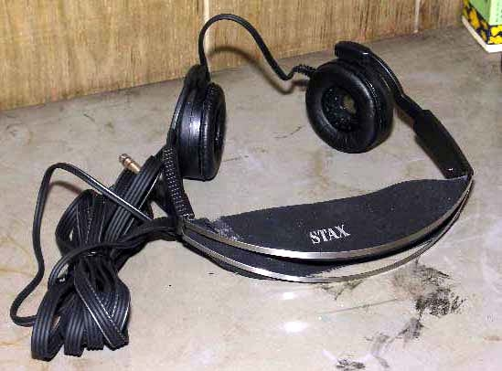
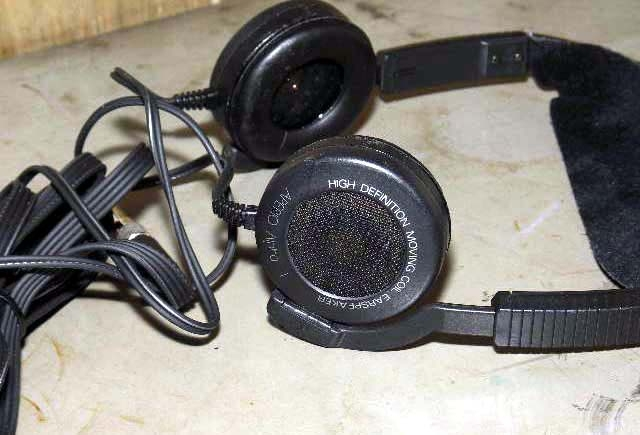

APERIO ALPHA1


写真は管理人所有機
■価格
？
■型式 オープンエアダイナミック型
■振動板
■インピーダンス
48Ω
■再生周波数帯域 20-20,000Hz
■許容入力 100mW(定格入力）
■感度 106dB/1mW
■コード 2.5m平行ステレオミニプラグ
■重量 180g（コード含む）
■発売 1994年？
■販売終了 ？
■備考
海外で販売していたといわれる非コンデンサー型ヘッドフォン。
国内での販売状況は不明だが、管理人が購入したのは1994年8月の秋葉原である。
またパッケージの裏には1990年8月印刷となっている。
なお「APERIO」という名称については、STAXがかつて販売していたTIPTOES（ティップトゥ)
というアクササリーで「APERIO シリーズ」という名称がついていたが、関連は不明。
パッケージは、日本語及び英語で印刷されており、コンデンサー型ではないが
このヘッドフォンも「イヤスピーカー」と呼んでいる。
流通経路は不明だが、日本語による保証書も添付されており、流出品ではないだろう。
当時のSTAXは、手作りでコンデンサー型関連製品を自社生産していた為、この製品は
他社からOEM調達した可能性が高い。
最近、オーディオイベントで、このヘッドフォンに酷似した機種を見かけたが、SOUND
WARRIORなどで知られる城下工業の製品だった。
STAXのインデックスヘ